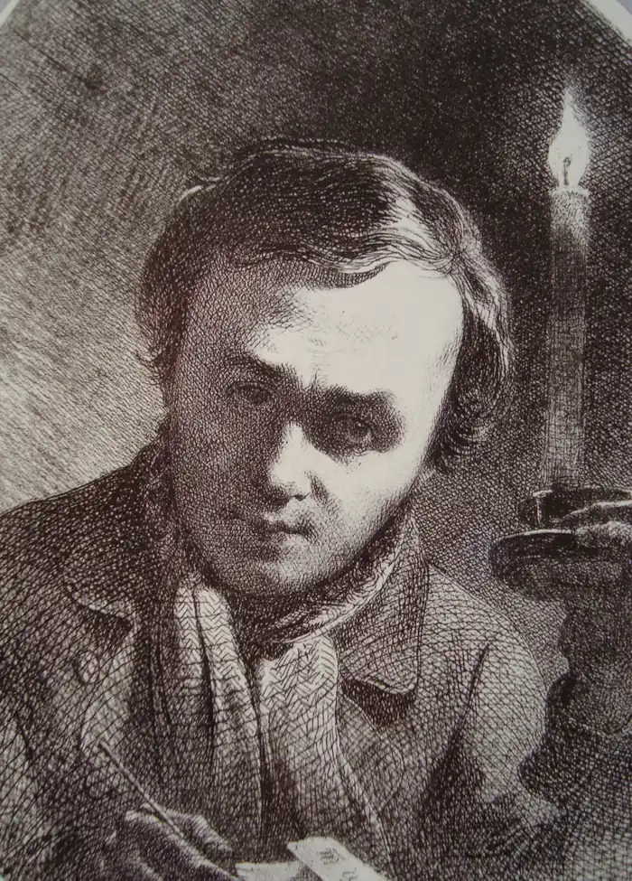
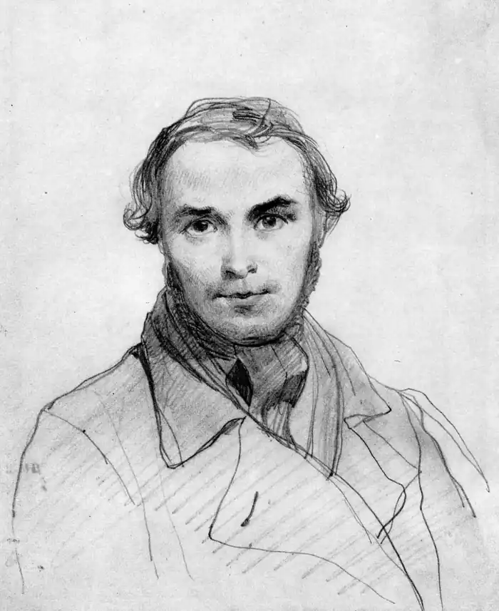
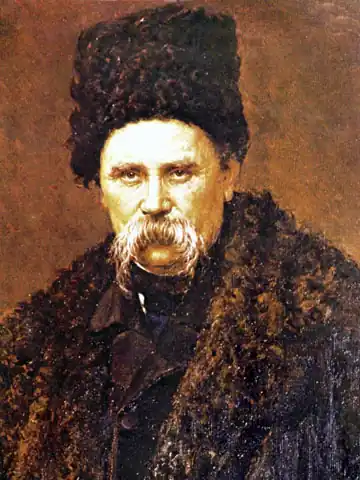
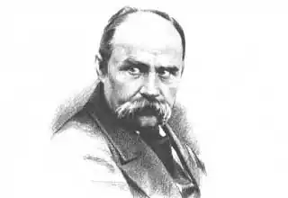
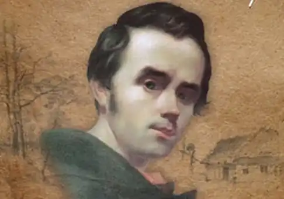
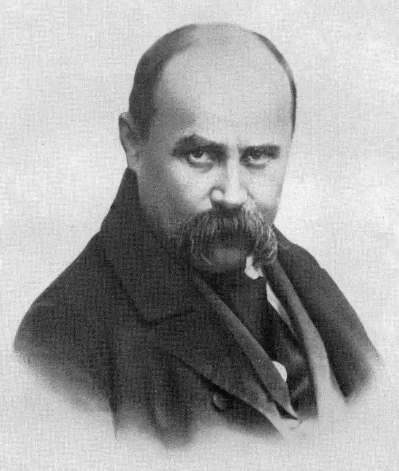
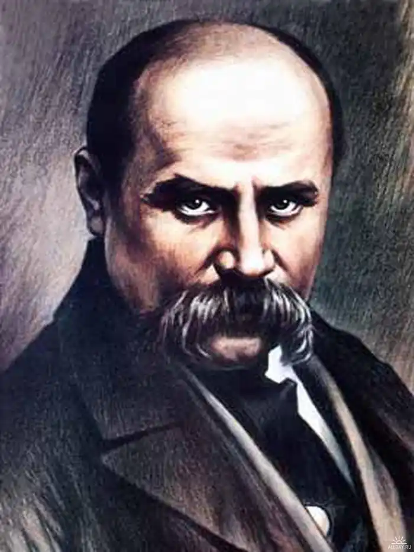
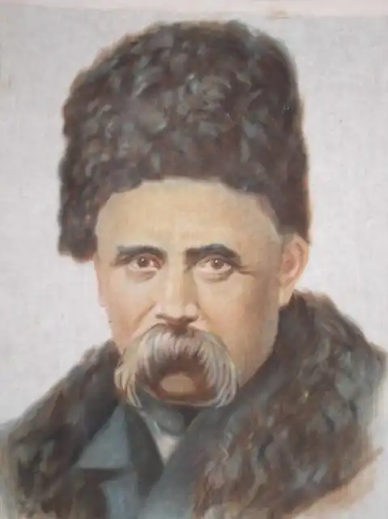
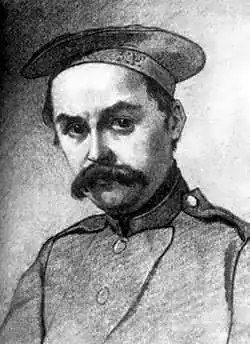
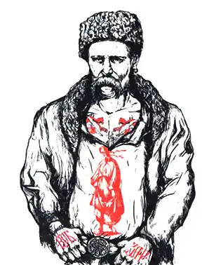

Т. Г. ШЕВЧЕНКО
(1814 — 1861)
Тарас Григорович Шевченко народився 25 лютого (9 березня за н. ст.) 1814р. в с. Моринці Звенигородського повіту Київської губернії. Його батьки, що були кріпаками багатого поміщика В. В. Енгельгардта, незабаром переїхали до сусіднього села Кирилівки. 1822р. батько віддав його "в науку" до кирилівського дяка. За два роки Тарас навчився читати й писати, і, можливо, засвоїв якісь знання з арифметики. Читав він дещо й крім Псалтиря. У поезії "А. О. Козачковському" Шевченко згадував, як він школярем списував у бур'янах у саморобний зошит вірші Сковороди та колядку "Три царіє со дари". Після смерті у 1823р. матері і 1825р. батька Тарас залишився сиротою. Деякий час був "школярем-попихачем" у дяка Богорського. Вже в шкільні роки малим Тарасом оволоділа непереборна пристрасть до малювання. Він мріяв "сделаться когда-нибудь хоть посредственным маляром" і вперто шукав у навколишніх селах учителя малювання. Та після кількох невдалих спроб повернувся до Кирилівки, де пас громадську череду і майже рік наймитував у священика Григорія Кошиця. Наприкінці 1828 або на початку 1829р. Тараса взято до поміщицького двору у Вільшані, яка дісталася в спадщину позашлюбному синові В. Енгельгардта, ад'ютантові віленського військового губернатора П. Енгельгардту. Восени 1829р. Шевченко супроводжує валку з майном молодого пана до Вільно. У списку дворових його записано здатним "на комнатного живописца". Усе, що ми знаємо про дитину й підлітка Шевченка зі спогадів і його творів, малює нам характер незвичайний, натуру чутливу й вразливу на все добре й зле, мрійливу, самозаглиблену і водночас непокірливу, вольову і цілеспрямовану, яка не задовольняється тяжко здобутим у боротьбі за існування шматком хліба, а прагне чогось вищого. Це справді художня натура. Ці риси "незвичайності" хлопчика помітив ще його батько. Помираючи, він казав родичам: "Синові Тарасу із мого хазяйства нічого не треба; він не буде абияким чоловіком: з його буде або щось дуже добре, або велике ледащо; для його моє наслідство або нічого не буде значить, або нічого не поможе". У Вільно Шевченко виконує обов'язки козачка в панських покоях. А у вільний час потай від пана перемальовує лубочні картинки. Шевченка віддають вчитися малюванню. Найвірогідніше, що він короткий час учився у Яна-Батіста Лампі (1775 — 1837), який з кінця 1829р. до весни 1830р. перебував у Вільно, або в Яна Рустема (? — 1835), професора живопису Віленського університету. Після початку польського повстання 1830р. віленський військовий губернатор змушений був піти у відставку. Поїхав до Петербурга і його ад'ютант Енгельгардт. Десь наприкінці лютого 1831р. помандрував до столиці у валці з панським майном і Шевченко. 1832р. Енгельгардт законтрактовує Шевченка на чотири роки майстрові петербурзького малярного цеху В. Ширяєву. Разом з його учнями Шевченко бере участь у розписах Великого та інших петербурзьких театрів. Очевидно, 1835р. з Шевченком познайомився учень Академії мистецтв І. Сошенко. Він робить усе, щоб якось полегшити його долю: знайомить з Є. Гребінкою і конференц-секретарем Академії мистецтв В. Григоровичем, який дозволяє Шевченкові відвідувати рисувальні класи Товариства заохочування художників (1835). Згодом відбувається знайомство Шевченка з К. Брюлловим і В. Жуковським. Вражені гіркою долею талановитого юнака, вони 1838р. викупляють його з кріпацтва. 21 травня 1838р. Шевченка зараховують стороннім учнем Академії мистецтв. Він навчається під керівництвом К. Брюллова, стає одним з його улюблених учнів, одержує срібні медалі (за картини "Хлопчик-жебрак, що дає хліб собаці" (1840), "Циганка-ворожка" (1841), "Катерина" (1842)). Остання написана за мотивами однойменної поеми Шевченка. Успішно працює він і в жанрі портрета (портрети М. Луніна, А. Лагоди, О. Коцебу та ін., автопортрети). Вірші Шевченко почав писати ще кріпаком, за його свідченням, у 1837р. З тих перших поетичних спроб відомі тільки вірші "Причинна" і "Нудно мені, тяжко — що маю робити" (належність останнього Шевченкові не можна вважати остаточно доведеною). Пробудженню поетичного таланту Шевченка сприяло, очевидно, знайомство його з творами українських поетів (Котляревського і романтиків). Кілька своїх поезій Шевченко у 1838р. віддав Гребінці для публікації в українському альманасі "Ластівка". Але ще до виходу "Ластівки" (1841) 18 квітня 1840р. з'являється перша збірка Шевченка — "Кобзар". Це була подія величезного значення не тільки в історії української літератури, а й в історії самосвідомості українського народу. Хоча "Кобзар" містив лише вісім творів ("Думи мої, думи мої", "Перебендя", "Катерина", "Тополя", "Думка", "До Основ'яненка", "Іван Підкова", "Тарасова ніч"), вони засвідчили, що в українське письменство прийшов поет великого обдаровання. Враження, яке справили "Кобзар" і твори, надруковані в "Ластівці", підсилилося, коли 1841р. вийшла історична поема Шевченка "Гайдамаки" (написана у 1839 — 1841 рр.). Поема присвячена Коліївщині — антифеодальному повстанню 1768р. на Правобережній Україні проти польської шляхти. Вона пройнята пафосом визвольної боротьби, містить алюзії, що допомагали читачеві усвідомити її сучасний соціально-політичний підтекст. Не випадково в умовах революційної ситуації в Росії "Гайдамаки" опубліковано 1861р. в російському перекладі в журналі "Современник". Критичні відгуки на "Кобзар" і "Гайдамаків" були, за окремими винятками, позитивними. Майже всі рецензенти визнали поетичний талант Шевченка, хоча деякі з консервативних журналів докоряли поетові, що він пише українською мовою ("Сын Отечества", "Библиотека для чтения"). Особливо прихильною була рецензія на "Кобзар" у журналі "Отечественные записки", критичним відділом якого керував В. Бєлінський. Навчаючись у Академії мистецтв і маючи твердий намір здобути професійну освіту художника, Шевченко, проте, дедалі більше усвідомлює своє поетичне покликання. 1841р. він пише російською мовою віршовану історичну трагедію "Никита Гайдай", з якої зберігся лише уривок. Згодом він переробив її у драму "Невеста" (зберігся фрагмент "Песня караульного у тюрьмы"). 1842р. пише драматизовану соціально-побутову поему російською мовою "Слепая". Того ж року створює історичну поему "Гамалія" (вийшла окремою книжкою 1844р.). Кінцем лютого 1843р. датована історико-побутова драма "Назар Стодоля" (написана російською мовою, відома лише в українському перекладі). У 1844 — 1845 рр. її поставив аматорський гурток при Медико-хірургічній академії в Петербурзі. 1844р. вийшло друге видання "Кобзаря". Усі ці твори належать до раннього періоду творчості Шевченка, коли він усвідомлював себе як "мужицький поет" і поет-патріот. Новий період творчості Шевченка охоплює роки 1843 — 1847 (до арешту) і пов'язаний з двома його подорожами на Україну. За назвою збірки автографів "Три літа" (яка включає поезії 1843 — 1845 рр.) ці роки життя й творчості поета названо періодом "трьох літ". До цього ж періоду фактично належать і твори, написані у 1846 — 1847 рр. (до арешту). Період "трьох літ" — роки формування художньої системи зрілого Шевченка. Його художню систему характеризує органічне поєднання реалістичного і романтичного начал, в якому домінуючою тенденцією стає прагнення об'єктивно відображати дійсність у всій складності її суперечностей. У ці й наступні роки поет пише і реалістичні твори ("Сова", "Наймичка", "І мертвим, і живим..."), і твори, в яких реалістичне начало по-різному поєднується з романтичним ("Сон", "Єретик"), і твори суто романтичні ("Великий льох", "Розрита могила", історичні поезії періоду заслання). Таке співіснування романтизму й реалізму в творчості зрілого Шевченка є індивідуальною особливістю його творчого методу. Художній метод Шевченка — цілісний і водночас "відкритий", тобто поет свідомо звертався до різних форм художнього узагальнення й різних виражальних засобів відповідно до тих завдань, які розв'язував. Перша подорож Шевченка на Україну продовжувалася близько восьми місяців. Виїхавши з Петербурга у травні 1843р., поет відвідав десятки міст і сіл України (рідну Кирилівку, Київ, Полтавщину, Хортицю, Чигирин тощо). Спілкувався з селянами, познайомився з численними представниками української інтелігенції й освіченими поміщиками (зокрема, з М. Максимовичем, В. Білозерським, П. Кулішем, В. Забілою, О. Афанасьєвим-Чужбинським, братом засланого декабриста С. Волконського — М. Рєпніним, з колишнім членом "Союзу благоденства" О. Капністом, майбутнім петрашевцем Р. Штрандманом та ін.). На Україні Шевченко багато малював, виконав ескізи до альбому офортів "Живописна Україна", який задумав як періодичне видання, присвячене історичному минулому й сучасному народному побуту України. Єдиний випуск цього альбому, що вважається першим твором критичного реалізму в українській графіці, вийшов 1844р. у Петербурзі. На Україні Шевченко написав два поетичних твори — російською мовою поему "Тризна" (1844р. опублікована в журналі "Маяк" під назвою "Бесталанный" і того ж року вийшла окремим виданням) і вірш "Розрита могила". Та, повернувшись до Петербурга наприкінці лютого 1844р., він під враженням побаченого на Україні пише ряд творів (зокрема, поему "Сон"), які остаточно визначили подальший його шлях як поета. Весною 1845р. Шевченко після надання йому Радою Академії мистецтв звання некласного художника повертається на Україну. Знову багато подорожує (Полтавщина, Чернігівщина, Київщина, Волинь, Поділля), виконує доручення Київської археографічної комісії, записує народні пісні, малює архітектурні й історичні пам'ятки, портрети й краєвиди. З жовтня по грудень 1845р. поет переживає надзвичайне творче піднесення, пише один за одним твори "Єретик", "Сліпий", "Наймичка", "Кавказ", "І мертвим, і живим...", "Холодний яр", "Як умру, то поховайте" ("Заповіт") та ін. Усі свої поезії 1843 — 1845 рр. (крім поеми "Тризна") він переписує в альбом, якому дає назву "Три літа". 1846р. створює балади "Лілея" і "Русалка", а 1847р. (до арешту) — поему "Осика". Тоді ж він задумує нове видання "Кобзаря", куди мали увійти його твори 1843 — 1847 рр. легального змісту. До цього видання пише у березні 1847р.